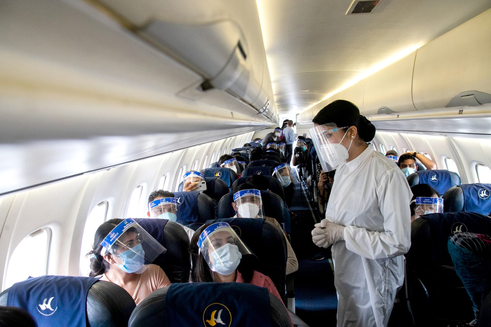
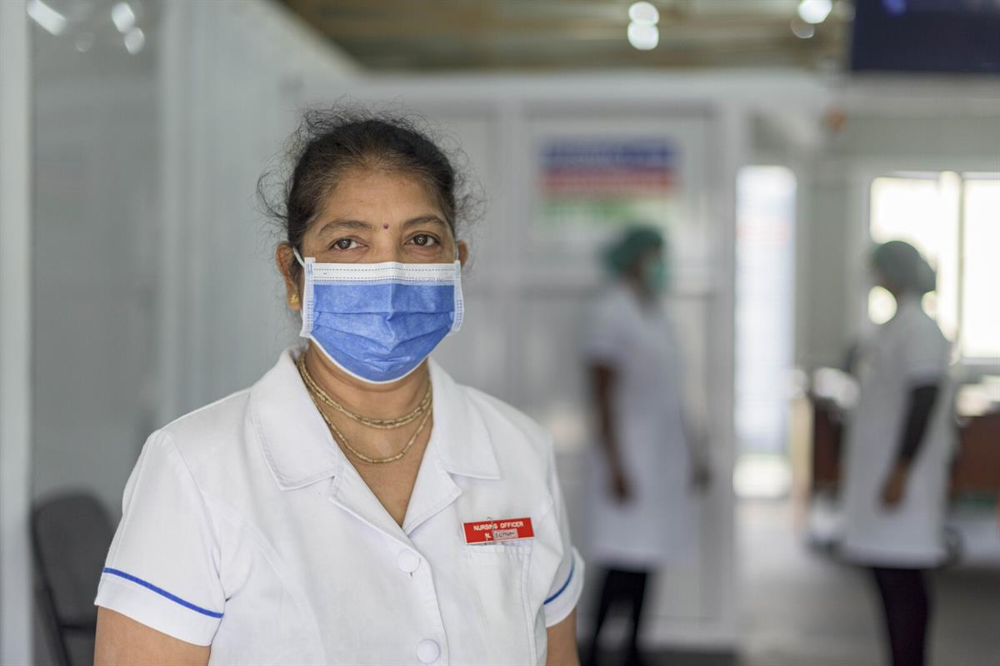

 FACTORES QUE DEBEN TENERSE EN CUENTA PARA REANUDAR LOS VIAJES INTERNACIONALES. Todos los países deben realizar un análisis de los riesgos y los beneficios y establecer sus prioridades. La OMS recomienda que se dé prioridad a los viajes esenciales en casos de emergencia, las actividades humanitarias (incluidos los vuelos médicos de emergencia y las evacuaciones médicas), los viajes del personal esencial (incluido el personal de respuesta a emergencias y los proveedores de asistencia técnica en materia de salud pública, el personal esencial del sector del transporte, como la gente de mar y el personal diplomático) y la repatriación al país de origen. También debe otorgarse prioridad al transporte de mercancías de suministros médicos, alimentarios y energéticos esenciales. Los viajeros enfermos y las personas en situación de riesgo, incluidas las personas de edad y las que padecen enfermedades crónicas o afecciones de salud subyacentes deben posponer o evitar los viajes internacionales con origen o destino en las zonas donde hay transmisión comunitaria. Ningún viaje está exento de riesgos si se tiene en cuenta la posible importación o exportación de casos en el contexto de los viajes internacionales. Por consiguiente, la evaluación y gestión minuciosa y continua de los riesgos ayudará a determinar, reducir y mitigar esos riesgos, al tiempo que se equilibran las consecuencias socioeconómicas de las medidas (o restricciones temporales) relativas a los viajes con las posibles consecuencias adversas para la salud pública. El proceso de decisión debe incluir un análisis de la situación en el que se tenga en cuenta el contexto local de los países de salida y destino. Deben tenerse en cuenta los siguientes factores: la epidemiología y las pautas de transmisión locales; las medidas nacionales de salud pública y sociales para controlar los brotes tanto en el país de origen como en el de destino; la capacidad de los servicios de salud pública y de salud a nivel nacional y subnacional para gestionar los casos sospechosos y confirmados entre los viajeros, incluido en los puntos de entrada (puertos, aeropuertos, pasos fronterizos terrestres) para mitigar y gestionar el riesgo de importación o exportación de la enfermedad; y la evolución de los conocimientos sobre la transmisión de la COVID-19 y sus características clínicas.
 Investigaciones epidemiológicas y clínicas precoces sobre el COVID-19 para una respuesta de salud pública Foco técnico
Investigações epidemiológicas e clínicas precoces de COVID-19 para resposta em saúde pública Foco técnico
Hacer frente a las enfermedades no transmisibles durante la pandemia de COVID-19 y después de ella
Documento de posición Septiembre de 2020
Responder a las enfermedades no transmisibles durante la pandemia de COVID-19 y después de esta Situación de las pruebas relativas a la COVID-19 y las enfermedades no transmisibles: una revisión rápida Septiembre de 2020
Consideraciones para las medidas de salud pública relativas a las escuelas en el contexto de la COVID-19 Anexo del documento Consideraciones relativas a los ajustes de las medidas de salud pública y sociales en el contexto de la COVID-19 14 de septiembre de 2020
Detección de antígenos para el diagnóstico de la infección por el SARS-CoV-2 mediante inmunoanálisis rápidos Orientaciones provisionales 11 de septiembre de 2020
Pruebas diagnósticas para el SARS-CoV-2 Orientaciones provisionales 11 de septiembre de 2020
Prevención y control de infecciones para la gestión segura de cadáveres en el contexto de la COVID-19 Orientaciones provisionales 4 de septiembre de 2020
Corticosteroides para el tratamiento de la COVID-19 Orientaciones evolutivas 2 de septiembre de 2020 La promoción de medidas de salud pública en respuesta a la COVID-19 en buques de carga y pesqueros Orientaciones provisionales 25 de agosto de 2020
Gestión de la COVID-19 en hoteles y otras entidades del sector del alojamiento Orientaciones provisionales 25 de agosto de 2020
| Lo que el mundo debe saber (Covid-19) | Las consecuencias del virus a nivel mundial |
|---|---|
| ¿Cómo protegerse? | Desigualdad social |
| Preguntas y respuestas | Trabajos y clases virtuales |
| Consejos para la población acerca de los rumores | Más muertos que una Guerra |
| Consejos sobre viajes | Afecta directamente a la economía mundial |
| Consideraciones de salud pública al reanudar los viajes internacionales | Distanciamiento social |
| Orientaciones técnicas | Las personas de la tercera edad son las de mayor riesgo |